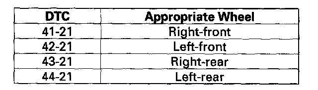

DTC 41-21
DTC 41-21: Right-front Wheel LockDTC 42-21: Left-front Wheel Lock
DTC 43-21: Right-rear Wheel Lock
DTC 44-21: Left-rear Wheel Lock
The DTCs may be indicated under these conditions:
^ The vehicle goes into a spin.
^ The ABS or VSA continues to operate for a long time.
^ Snow build-up on the wheel sensor.
^ Misadjusted brake switch.
^ Contaminated brake fluid.
1. Raise the vehicle, and support it with safety stands in the proper locations.
2. Turn the appropriate wheel by hand.

Is there brake drag?
YES - Repair the brake drag.
NO - Go to step 3.
3. Check the appropriate wheel sensor is properly mounted.
Is the wheel sensor installation OK?
YES - Intermittent failure, the system is OK at this time. Check for loose terminals between the wheel sensor 2P connector and the VSA modulator-control unit 37P connector. Refer to intermittent failures troubleshooting. If the vehicle continues to code, replace the VSA modulator-control unit.
NO - Reinstall the wheel sensor, and check the mounting position.